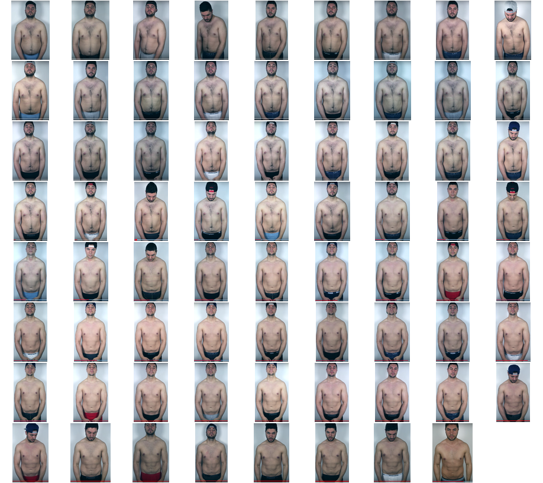

RAPORT
{% if przetrenowana_strona %}
{% if przetrenowana_strona_ktora %}
Twoja LEWA jest nie dotrenowana!
{% else %}
Twoja PRAWA jest nie dotrenowana!
{% endif %}
{% endif %}

 {% if show_two %}
{% if show_two %}
two
{% endif %}-
{% for name in names %}
- {{ name }} {% endfor %}